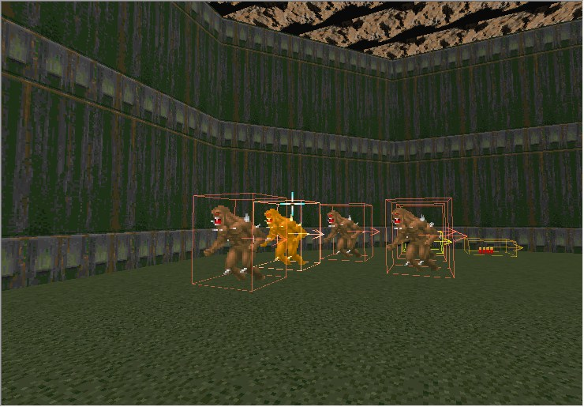
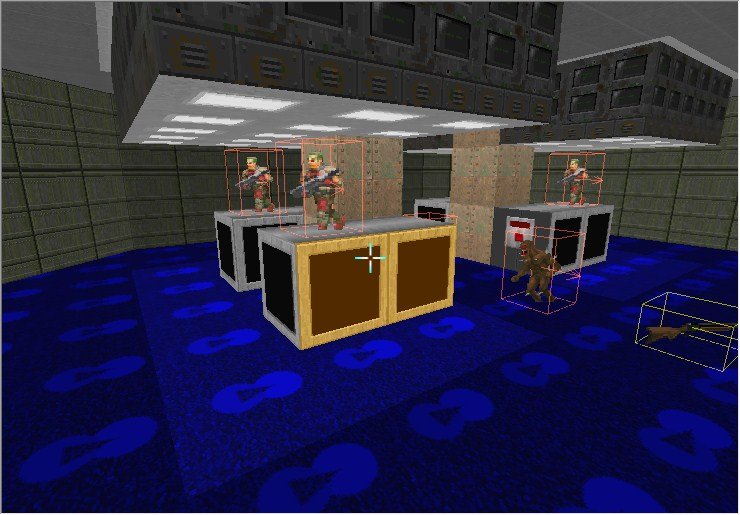
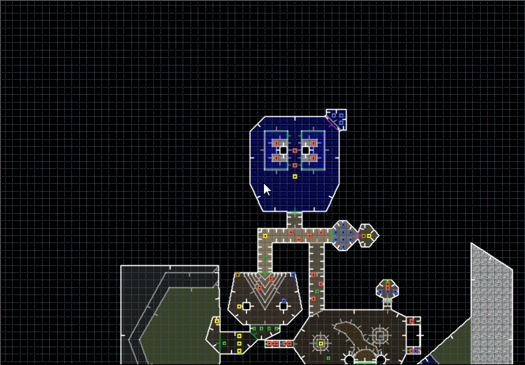

GZDB 可以在经典模式和视觉模式之间同步相机位置。与 DB2 不同，这不需要视觉模式相机物件（Visual Mode Camera thing），而且两个方向都有效。其工作方式如下：
假设你想在视觉模式中查看那个秘密区域：

将鼠标光标移到视觉模式中你想出现的位置，然后切换到视觉模式（默认按键为 Q）。你将出现在那里：

然后，假设你在没有离开视觉模式的情况下移动到了一个完全不同的地方：

如果你现在离开视觉模式，地图将以视觉模式相机所在的位置为中心：

如果你不喜欢这种行为，请禁用“在 2D 和 3D 模式之间同步摄像机位置”设置选项。
附加按键：
切换进入或离开视觉模式时按住 Shift，还会同步选中的地图元素。
切换进入或离开视觉模式时按住 Ctrl，会临时禁用相机同步（仅在启用“在 2D 和 3D 模式之间同步摄像机位置”设置选项时有效）。